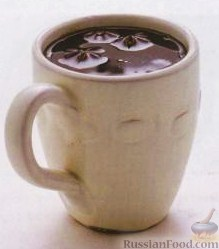

{{link1}}
Кофе эспрессо (свежесваренный) - 250 г Сливки жирные - 100 г Сахарная пудра - 1 ст. л. Женевер (джиневер) (Genever) (бельгийский алкогольный напиток, сходный с джином) - 25-45 г Ликер "Крем де какао" (Creme de Cacao) - 45 г Какао-порошок - 1 ч. л..

Кофе по-турецки
Кофе свежемолотый (максимально мелкий) - 2 ч. ложки Вода - 1 стакан Пудра сахарная - 0,5 ст. ложки Желток - 1 шт. Для сервировки (по желанию): Конфета шоколадная Орехи кешью.

Cafe de olla
Вода — 1 л Сахар темно-коричневый — 150 г Патока — 1 ч. л. Корица — 1 маленькая палочка Кофе жареный, среднего помола — 50 г Анисовые семена (по желанию)
